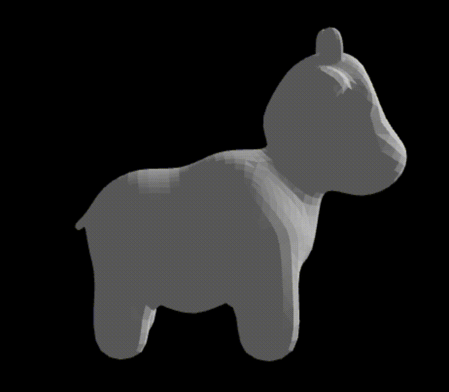
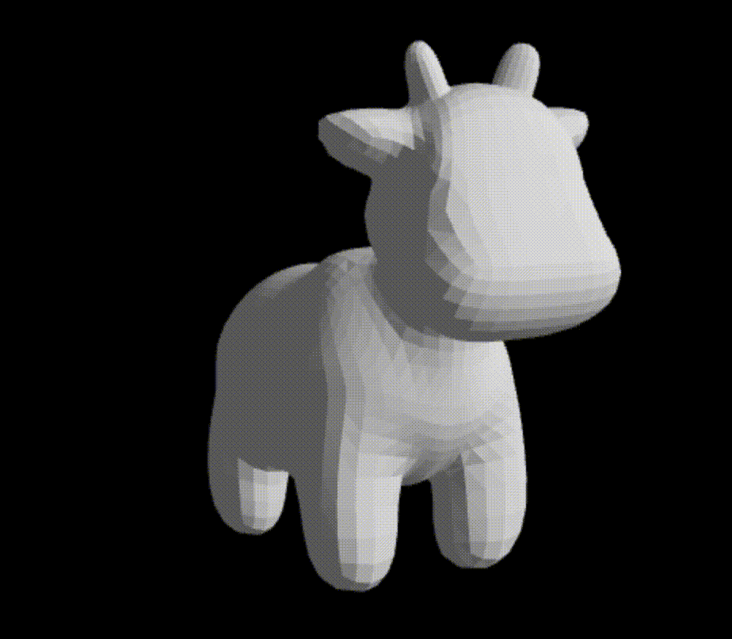
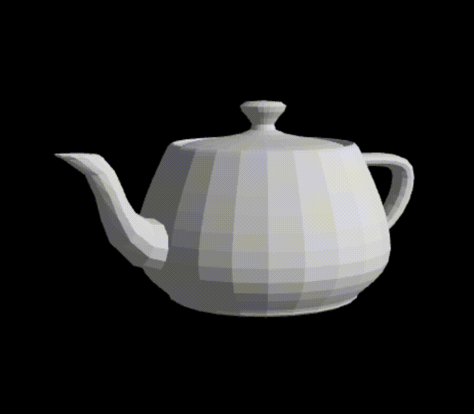

In this project, we developed an interactive 3D model morphing system using Three.js, enabling users to visually morph between two 3D models
in real time through a web-based interface. The system allows users to choose from a variety of morphing algorithms to control how the vertices
from the start model correspond to those in the end model. Several morphing algorithms were implemented, ranging from basic linear morphing to
proximity-based matching and customized algorithms prioritizing unique or extreme points. To enhance performance, backend computations were
written in C++ and integrated into the JavaScript frontend. While we successfully achieved core morphing functionality and a flexible GUI,
challenges such as inconsistent vertex counts, varying vertex orderings, and difficulties in capturing fine morph details highlighted the
limitations of proximity-based correspondence alone. In the final stretch, we also began exploring volumetric morphing techniques using Signed
Distance Fields (SDFs) and Marching Cubes as a promising future direction.
Technical Approach
The frontend of the system was designed entirely from scratch using Three.js, a JavaScript 3D Library. First, we initialize a PerspectiveCamera,
WebGLRenderer, OrbitControls, Scene, and GUI using three.module.js and add-ons. We also define a series of shading options: wireframe, flat, smooth,
glossy, and reflective using various MeshMaterial, Lighting, and TextureLoading methods from Three.js. Then we render the scene and camera, making
sure to account for the correct shading parameter specified in the GUI. We re-render the scene whenever a different shading option is selected by the GUI.
Our GUI calls two key methods in order to perform 3D mesh morphing: loadModels() and updateMorph().
First, whenever the Start Model, End Model, or Morphing Algorithm is changed in the drop down, our GUI calls loadModels().
First, loadModels() remove the old mesh from the scene. Then we initialize a new ColladaLoader in order to load the startModel and
endModel. Specifically after waiting for both .dae models to load, we perform a uniform sampling
on both meshes to collect their vertices into a list. Afterwards, depending on the desired vertex matching morph algorithm, we call the correct
findClosestPoints() method which calculates the correspondence between the vertices of both meshes. Then, we create a new Mesh object for our startingMesh,
rotating and scaling it for visual appeal, and then adding it to the scene. Finally, we call morphMesh() and re-render the entire scene and camera.
The morphMesh() is called inside loadModels() and whenever the morph slider moves in the GUI. This method uses linear interpolation to translate the
vertices from their location in the startModel to their location in the endModel, considering correspondence when needed. After the vertex positions have
been updated, we re-render the entire scene and camera.
Our mesh morphing and animation toolkit utilizes 5 different vertex matching morph algorithms.
First, our “complete” algorithm only translates meshes from the StartMesh to the EndMesh without considering where those vertices originated. This gives
the morphing a “rearranging atoms” appearance. And while it works, it isn’t what you typically envision as a smooth mesh morphing. This is what prompted
us to design the brute-force “closest” algorithm. For each source vertex, the “closest” algorithm loops through all target vertices and calculates the
squared Euclidean distance for each. Then it adds the target vertex with the smallest distance to the correspondence list. We repeat until all source
vertices have been matched to a target vertex. This algorithm gives a very smooth “molded clay” look. However, sometimes this algorithm will prefer to
match vertices that have already been matched since they are closer in space, leaving the morphed End Mesh incomplete. For these reasons, we created the
“unique”, “extremes” and “uni/ex” vertex matching algorithms. Our “unique” algorithm works the exact same way as “closest”, except it checks and
sequentially adds all newly matched vertices to a “used” Set which ensures that all vertex matches are unique and not reused. This would hopefully
have the intention of filling out the End Mesh completely, which it does, but it ends up having similar morphing problems visually as “complete” in that
the vertices are morphing somewhat arbitrarily, looking more like moving atoms than molding clay. Another idea we had was to implement the “extremes”
algorithm. This algorithm is also similar to “closest”, except it uses a distance score to prioritize matching vertices that are farther away from each
other, in order to fill out the End Mesh better than “closest”, while maintaining the same “molded clay” appearance. And lastly, we tried combining the
“unique” and “extremes” algorithms into one, which resulted in the “uni/ex” algorithm.
Problems Encountered
Several significant challenges arose during the course of this project. One of the earliest issues involved dealing with models that had different numbers
of vertices. Without consistent vertex counts, one-to-one vertex mapping for morphing was impossible. This was resolved by introducing a uniform sampling
step to standardize the vertex count between models. A second major challenge was inconsistent vertex ordering between models, meaning that even if models
had the same number of vertices, their order in the data structure differed. As a result, applying transformations vertex-to-vertex led to distortions. To
overcome this, several proximity-based correspondence algorithms were implemented, each with its own criteria for determining the best match between vertices.
However, even these methods had limitations, particularly in preserving finer morphing details. Another challenge involved integrating backend C++ logic into
the JavaScript-based frontend. This was initially difficult due to differences in the two environments, but was ultimately achieved successfully, allowing
computationally intensive correspondence calculations to be performed in real time by the server. Lastly, the discovery of SDF-based morphing as a promising
solution for many of these challenges came relatively late in the project. Although preliminary work was started on implementing this technique using Marching
Cubes, there was insufficient time to integrate it fully into the final system.
Lessons Learned
This project reinforced the importance of consistent and well-preprocessed model data when working with geometry-based algorithms. The complications caused by
inconsistent vertex counts and orderings were major obstacles that could have been mitigated through early, standardized pre-processing of model assets. Another
key takeaway was the recognition that proximity-based correspondence algorithms, while effective for general shape morphing, struggle with preserving fine
details. Specialized algorithms that prioritize unique or extreme points can help improve morphing in critical areas, but more advanced methods such as
volumetric morphing are likely needed for high-fidelity results. The project also demonstrated the feasibility of integrating C++ backend logic into a
JavaScript frontend, which proved valuable for handling computationally heavy operations in a browser-based application. Finally, this experience emphasized
the importance of scoping ambitious ideas realistically within project timelines and prioritizing foundational functionality before pursuing advanced
experimental features.
Results
The final system successfully delivered a functional interactive 3D model morphing application capable of morphing between two 3D models. The system featured
a real-time GUI interface that allowed users to select morphing algorithms, adjust the morphing amount via a slider, and switch between various shading modes
for better visual analysis. Five morphing algorithms were fully implemented and accessible through the interface, each demonstrating different behaviors in
the morphing process. Additionally, a partial prototype of a Signed Distance Field morphing system using Marching Cubes was developed and tested independently,
providing a strong foundation for future enhancement of the system beyond proximity-based techniques. You can try out our mesh morphing and animation toolkit
for yourself at https://taraspande.github.io/184-final-project/! Below are some gifs of our best
morphs. Notice how certain vertex matching algorithms perform better than others, depending on their topology and vertex count.
Our transformations:
cow.dae -> beetle.dae (closet matching)

cow.dae -> beetle.dae (unique matching)
cow.dae -> quadbal.dae (closest matching)
cow.dae -> quadball.dae (extreme matching)

cow.dae -> teapot.dae (complete matching)

teapot.dae -> cow.dae (complete matching)
References
We took heavy inspiration from homework 2 for this project. All of the mesh models we used were .dae files taken from HW2. Our frontend utilizes many methods from Three.js.
Tara made significant contributions to this project, developing the entire frontend system using Three.js. Tara designed and implemented the GUI, integrated
shading options (including wireframe, flat, glossy, reflective, and smooth), and managed all rendering and scene setup functionality. Additionally, Tara handled
the integration of C++ backend logic into the JavaScript frontend, enabling efficient backend computations for real-time morphing. Tara was also responsible for
creating the basic morphing algorithm (“complete”), incorporating Tamnhi’s original applyTransformation() function into the updateMorph() process, and developing
multiple correspondence algorithms including “extreme”, “unique”, and “uni-ex” vertex matching variants that built off Tamnhi's original findClosestPoints()
algorithm. Beyond the final deliverable, Tara began work on an SDF-based morphing prototype using Marching Cubes, which although incomplete, laid important
groundwork for future volumetric morphing techniques. Further contributions included adding mesh translation features for scene navigation and implementing
advanced texture shading options to improve visual clarity in the morphing demonstrations. Tara contributed to all final deliverables. In particular, Tara
wrote the Technical Approach section of this final writeup.
Tamnhi was contributed extensively to the backend system and algorithm design. She initially implemented the applyTransformation() function, which
utilized linear interpolation to move each vertex from its source to target position, forming the foundation for the morphing process used in the
final application. To support this, she created a custom Vec3 class to handle essential 3D vector operations, simplifying the implementation of
morphing transformations and geometric calculations throughout the backend. Early in the project, Tamnhi proposed and experimented with alternative
interpolation methods beyond linear, including quadratic and cubic Bézier interpolations, anticipating that these could produce smoother and more
visually appealing morphs for certain mesh pairs. However, as the project progressed and the focus shifted toward building a fully integrated mesh
morphing application with linear-based implementation better suited to the project's immediate goals. Tamnhi also implemented the original version of the
findClosestPoints() algorithm, which performed proximity-based vertex correspondence between meshes. This function became the base for the more
advanced correspondence algorithms later developed by Tara. As vertex ordering inconsistencies between models became an issue, Tamnhi explored
solutions such as a centroid-based vertex ordering algorithm, which sorted vertices by their angular position around the mesh’s centroid. Although
promising, this method was ultimately not included in the final implementation, as the team decided to prioritize simpler, proximity-based solutions
that aligned more closely with the final morphing pipeline. In addition to these core contributions, Tamnhi developed utility functions for uniform
sampling, which allowed different meshes to be standarized when passed into the updateMorph(). In the beginning, she also implemented Laplacian smoothing
for mesh refinement and an Iterative Closest Point (ICP) routine to support mesh alignment experiments. While not all experimental features were integrated
into the final application, they provided valuable insight into possible extensions for future work. Tamnhi also took charge of drafting and finalizing the
project documentation and technical write-ups.
Brandon was primarily responsible for developing the advanced morphing algorithms and integrating the backend computational logic with the frontend user
interface. A key technical challenge he addressed was enabling morphing between meshes with different vertex counts and topologies — a limitation in the
initial basic morphing implementation. His main contribution was the design and implementation of the morphMeshes function, which facilitated morphing
between dissimilar models. This relied on the uniformSample method, which intelligently down-sampled both meshes to an equal number of vertices while
preserving their overall structure. To establish meaningful vertex correspondences, Brandon implemented the findClosestPoints algorithm, which uses 3D
Euclidean distance calculations to determine optimal pairings between vertices, allowing for smooth and visually coherent transformations even between
topologically different models. To ensure performance and compatibility in a browser environment, Brandon translated these algorithms from C++ to JavaScript,
optimizing the vector computations for real-time rendering. He also handled the backend-to-frontend communication, ensuring that user-selected morphing
parameters were correctly passed to the backend, processed, and returned for visualization in the interactive scene. It’s worth noting that Brandon’s work
on the findClosestPoints function became a foundation for the advanced correspondence variants later developed and integrated into the frontend pipeline.
While Tara extended and adapted these variants to work seamlessly with the rendering and GUI systems, they built upon Brandon’s original backend logic and
design. In the earlier stages of development, Brandon explored a range of advanced vertex interpolation techniques for mesh morphing and animation. These
included linear interpolation between meshes, cubic Bézier interpolation, blend shape techniques, Catmull-Rom spline keyframe interpolation, and barycentric
interpolation for triangle-based morphing. Although this code was ultimately not integrated into the final morphing pipeline due to a shift in project direction,
it served as a valuable technical exploration that deepened the team’s understanding of interpolation methods, geometric transformations, and animation curves.
This early work informed later decisions about mesh correspondence strategies and laid conceptual groundwork for the advanced morphing system the team ultimately
built.
Samuel created a loop subdivision algorithm that has no edge split or flips and which just moves vertices according to the laplacian fairing, in order to
smooth meshes using no edge split or flips while preserving the topology of the mesh. The centroid for every vertex given its neighbours is computed, and
we move towards its center with a Laplacian smoothing step. A single parameter, smoothing weight, is used to effectuate this. The significance of this is
that typically, to refine and smooth triangle meshes, we typically split edges to add new vertices and new faces, as well as flip edges, which, to some
degree, involves topological deformations that corrupt the shape of the mesh